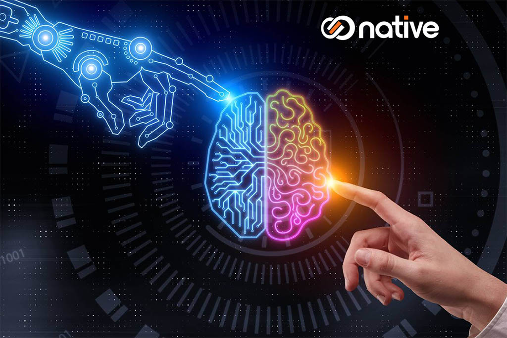
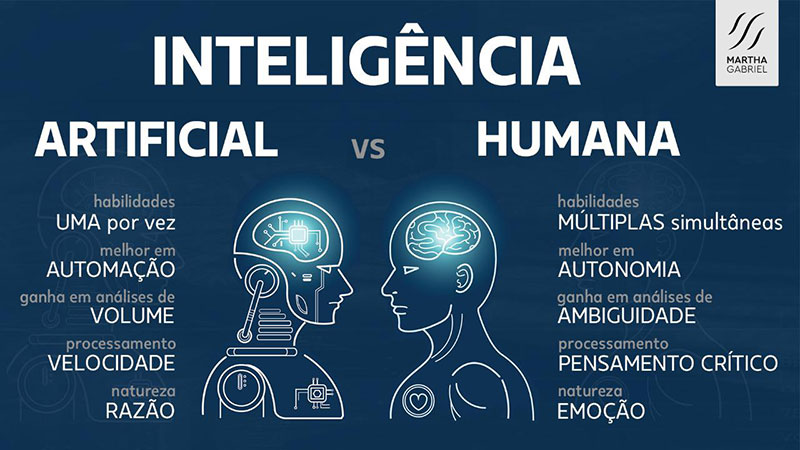

Inteligência Artificial
° Inteligência artificial (IA) se refere amplamente a qualquer comportamento semelhante ao do humano apresentado por uma máquina ou sistema.
° Na forma mais básica da IA, os computadores são programados para “imitar” o comportamento humano usando dados de exemplos anteriores de comportamento similar.
° Eles podem variar desde reconhecer diferenças entre um gato e um pássaro até realizar atividades complexas em uma fábrica.
